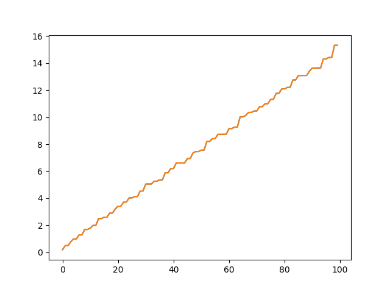
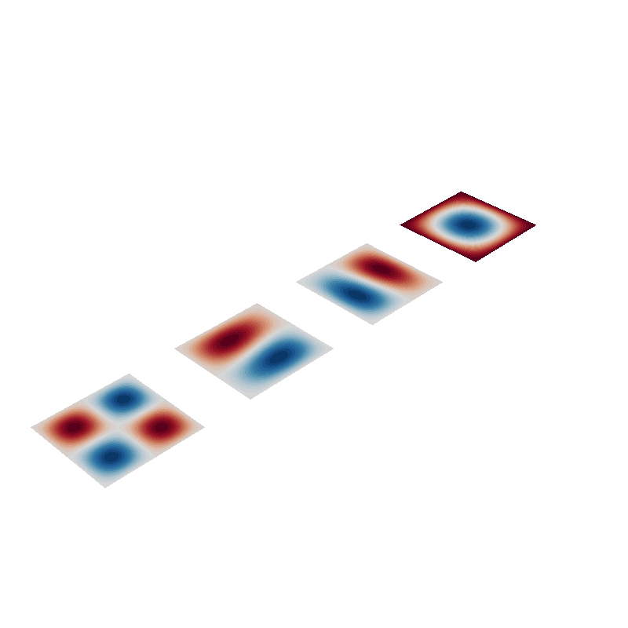
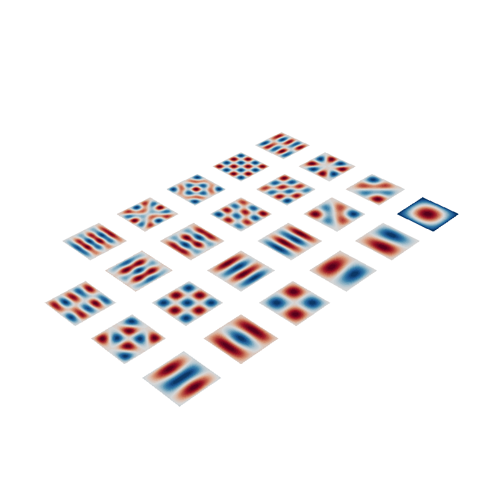

Note
Click here to download the full example code
Computation time for shiftinvert eigenvalue decomp, remove?¶
To validation or removed? New benchmarking folder?
- 

- 
Out:
Calculating surface harmonics expansion...
Computing the laplacian matrix...
Computing the mass matrix...
C:\Users\Rasmus Zetter\Documents\Aalto\bfieldtools\examples\time_eigenvalue_decomp.py:44: DeprecationWarning: time.clock has been deprecated in Python 3.3 and will be removed from Python 3.8: use time.perf_counter or time.process_time instead
t0 = clock()
Calculating surface harmonics expansion...
C:\Users\Rasmus Zetter\Documents\Aalto\bfieldtools\examples\time_eigenvalue_decomp.py:46: DeprecationWarning: time.clock has been deprecated in Python 3.3 and will be removed from Python 3.8: use time.perf_counter or time.process_time instead
print("Time with shift invert:", clock() - t0)
Time with shift invert: 0.19946029999999926
0 0
1 0
2 0
3 0
C:\Users\Rasmus Zetter\Documents\Aalto\bfieldtools\examples\time_eigenvalue_decomp.py:51: DeprecationWarning: time.clock has been deprecated in Python 3.3 and will be removed from Python 3.8: use time.perf_counter or time.process_time instead
t0 = clock()
Calculating surface harmonics expansion...
C:\Users\Rasmus Zetter\Documents\Aalto\bfieldtools\examples\time_eigenvalue_decomp.py:53: DeprecationWarning: time.clock has been deprecated in Python 3.3 and will be removed from Python 3.8: use time.perf_counter or time.process_time instead
print("Time without shift invert:", clock() - t0)
Time without shift invert: 0.7863150000000001
0 0
1 0
2 0
3 0
4 0
5 0
0 1
1 1
2 1
3 1
4 1
5 1
0 2
1 2
2 2
3 2
4 2
5 2
0 3
1 3
2 3
3 3
4 3
[<matplotlib.lines.Line2D object at 0x000001F875069588>]
# import sys
# path = '/m/home/home8/80/makinea1/unix/pythonstuff/bfieldtools'
# if path not in sys.path:
# sys.path.insert(0, path)
import numpy as np
from bfieldtools.suhtools import SuhBasis
from mayavi import mlab
import trimesh
import matplotlib.pyplot as plt
from time import clock
from bfieldtools.utils import find_mesh_boundaries
# Create basis for a sphere (basis.eigenvals shere the same structure
# as spherical harmonic eigenvalues)
# mesh = icosphere(4)
import pkg_resources
# Load simple plane mesh that is centered on the origin
file_obj = pkg_resources.resource_filename(
"bfieldtools", "example_meshes/10x10_plane_hires.obj"
)
mesh = trimesh.load(file_obj, process=True)
t = np.eye(4)
t[1:3, 1:3] = np.array([[0, 1], [-1, 0]])
mesh.apply_transform(t)
boundary, inner_verts = find_mesh_boundaries(mesh)
closed = False
basis = SuhBasis(mesh, 1)
basis.Nc = 100
t0 = clock()
basis.calculate_basis(shiftinvert=True)
print("Time with shift invert:", clock() - t0)
mlab.figure()
basis.plot(4)
e1 = basis.eigenvals
b1 = basis.basis
t0 = clock()
basis.calculate_basis(shiftinvert=False)
print("Time without shift invert:", clock() - t0)
b2 = basis.basis
mlab.figure()
basis.plot(23)
e2 = basis.eigenvals
plt.plot(e1)
plt.plot(e2)
Total running time of the script: ( 0 minutes 9.410 seconds)